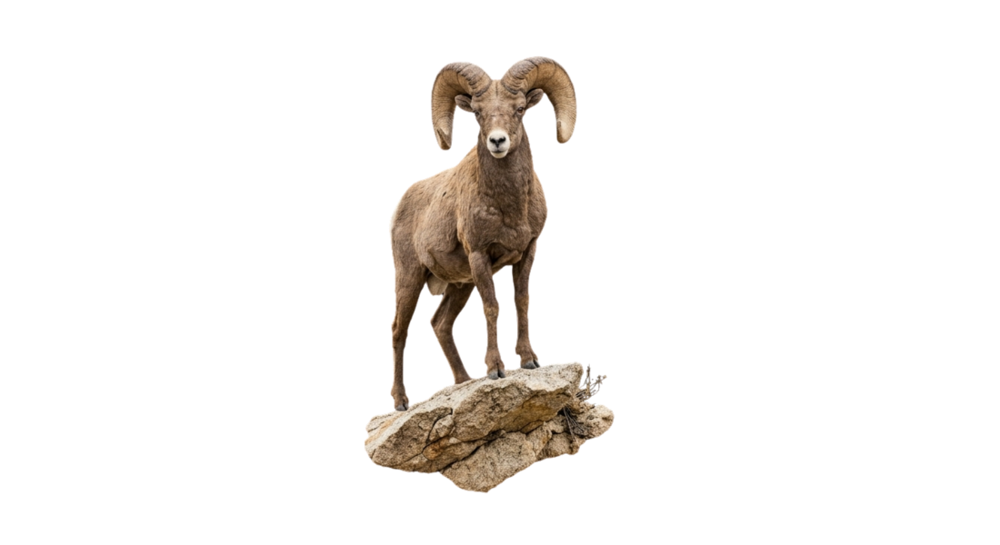
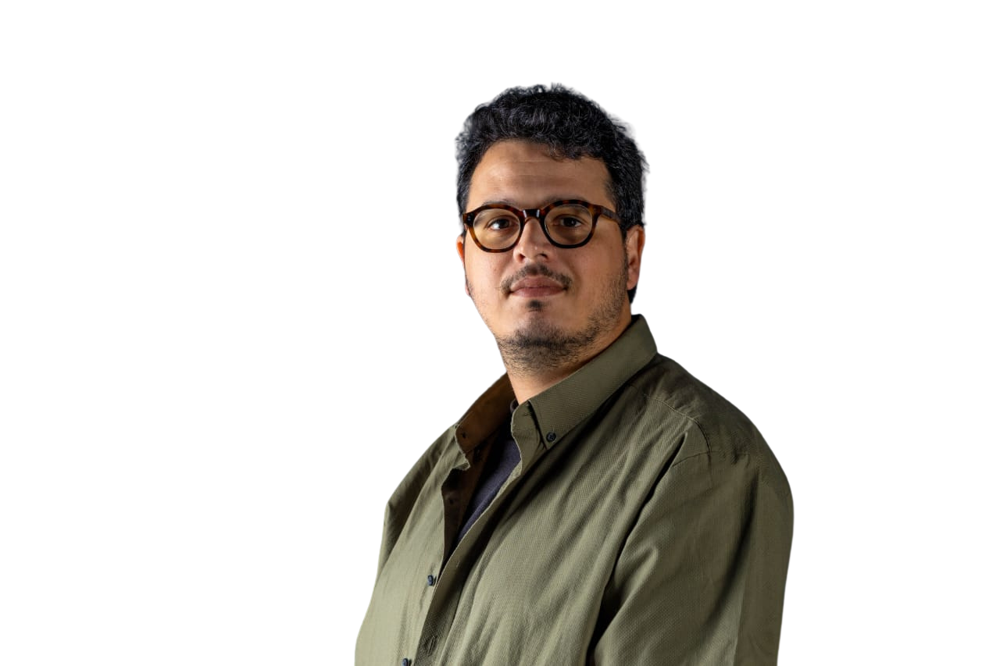
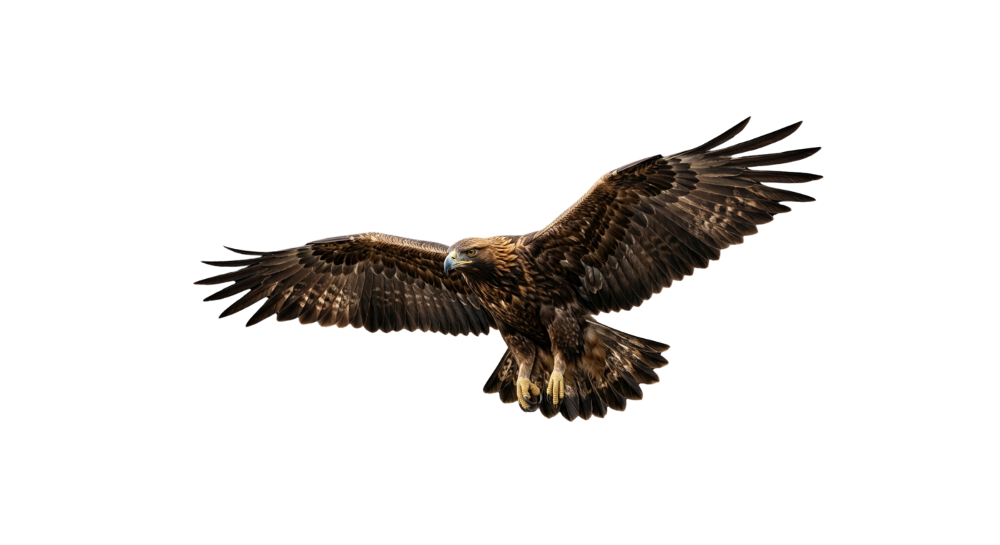
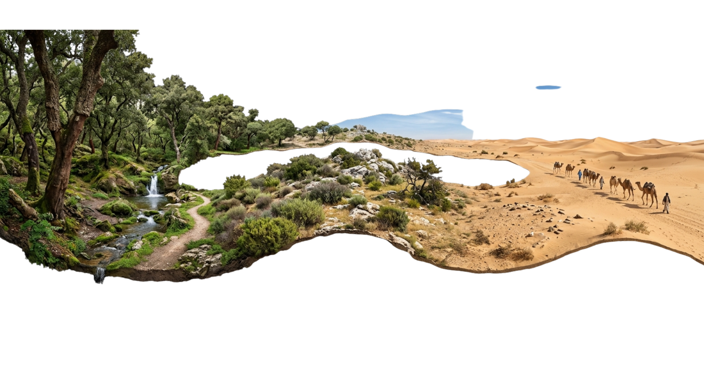

A scientist most at home in the field.
From Mediterranean islands to the deserts of California, my work follows one question: how do we listen to ecosystems well enough to protect them?



I'm a wildlife conservation professional specializing in biodiversity monitoring, ecological research, and conservation program management. As a Fulbright Scholar, I trained in wildlife ecology and statistical modeling at the University of Wisconsin–Madison.
Today I serve as M&E and Knowledge Transfer Officer at WWF North Africa, leading the monitoring and evaluation of conservation programs across the region — building strategic frameworks, coordinating stakeholders, and turning scientific findings into conservation action.
My research has carried me from the wetlands of Tunisia to the deserts of California, studying everything from Lacertid lizards to loggerhead sea turtles. I'm especially drawn to bioacoustics and machine learning — new ways to hear what ecosystems are telling us.
Two continents, one question
The same question — how do we listen to ecosystems well enough to protect them? — has carried my fieldwork across two very different wild worlds.


Cork-oak forests, salt lakes, and the Sahara — home ground, and the focus of my work leading monitoring and evaluation with WWF North Africa.

Fulbright years at UW–Madison and fieldwork across the deserts and mountains of California — mountain lions, bighorn sheep, and desert reptiles.
Recognition
National Geographic Explorer
For the project Tunisian Wonders, documenting the country's biodiversity.
Fulbright Master Scholar
Full scholarship for graduate studies in Wildlife Ecology at UW–Madison.
Initiative PIM Research Grant
Funding for lizard population monitoring on Zembra Island.
Expertise
Conservation & Research
Technical Tools
Languages
Education
M.S. Wildlife Ecology
University of Wisconsin–Madison · Fulbright Scholar
M.S. Evolutionary Ecology
Faculty of Sciences of Tunis